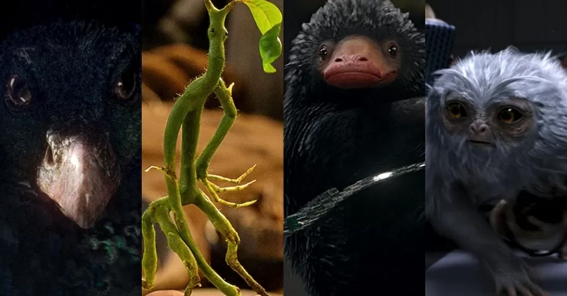
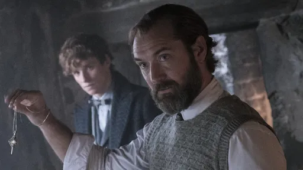
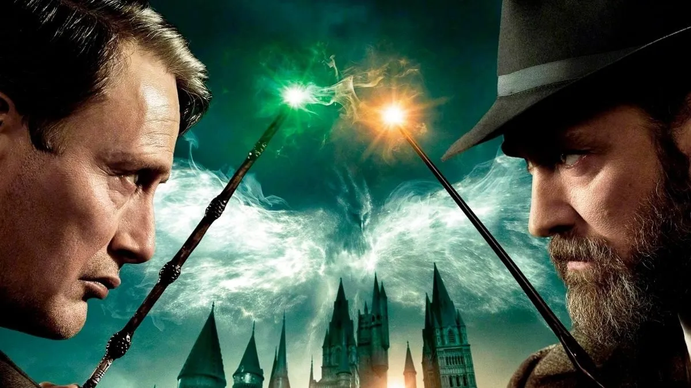
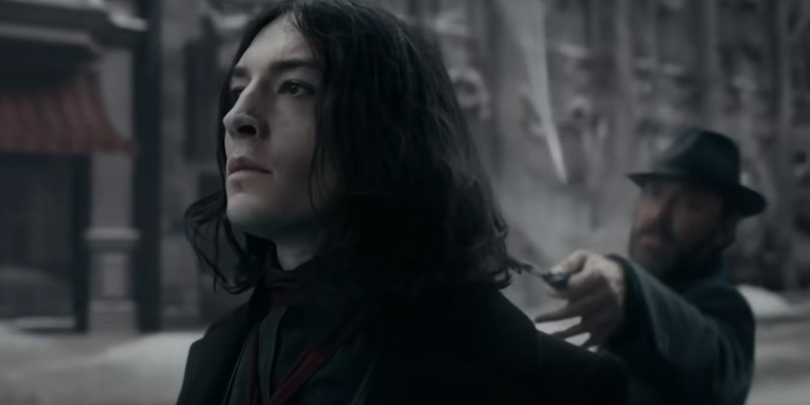

ANIMAIS FANTÁSTICOS: OS SEGREDOS DE DUMBLEDORE

Harry Potter e seu mundo mágico é um dos universos mais ricos da cultura pop e, por isso, se tornou uma das sagas mais populares no cinema. Portanto, era de se esperar que, mesmo depois do término da história de Harry (Daniel Radcliffe) e Voldemort (Ralph Fiennes) em Relíquias da Morte - Parte 2 (2011), produções derivadas fossem lançadas. A franquia Animais Fantásticos é o primeiro resultado disso, com a história ambientada entre os anos de 1920 e 1945 durante eventos que antecedem a Primeira Guerra Bruxa.

Depois de Animais Fantásticos e Onde Habitam (2016) e, principalmente, Os Crimes de Grindelwald (2018) – que não foi bem recebido pela crítica e não atendeu às expectativas em bilheteria –, o terceiro filme intitulado de Os Segredos de Dumbledore (2022) se mostra o mais bem resolvido e com o melhor desenvolvimento da história em comparação com os anteriores. Mas ele ainda sofre com problemas em seu tom e, principalmente, com a escolha de prolongar a saga Animais Fantásticos para além do necessário.
Animais Fantásticos: Os Segredos de Dumbledore é a sequência das aventuras de Newt Scamander (Eddie Redmayne), um magizoologista que carrega em sua maleta uma coleção de fantásticas criaturas do mundo da magia descobertas em suas viagens. Dessa vez, ele é convocado por Alvo Dumbledore (Jude Law) na luta contra o vilão Grindelwald (Mads Mikkelsen).
A trama mostra por que o célebre bruxo de Hogwarts, que sabe da busca por controle de Grindelwald e é incapaz de detê-lo sozinho, confia no magizoologista para liderar uma equipe de bruxos, bruxas e um bravo padeiro trouxa em uma missão perigosa.

Ao longo do enredo, eles encontrarão velhos e novos animais fantásticos, além de enfrentar a crescente legião de seguidores do vilão. Mas o que o grupo de Scamander não sabe é que Grindelwald colocará o Mundo Mágico em uma luta contra o mundo dos trouxas. Enquanto o universo da magia fica mais dividido, Dumbledore deve decidir por quanto tempo ele ficará à margem da guerra que se aproxima.

O sábio e poderoso Alvo Dumbledore é uma peça chave nos filmes de Harry Potter, quando foi interpretado pelos atores Michael Gambon e Richard Harris. Nos dois primeiros Animais Fantásticos, Jude Law vive uma versão em formação do personagem, enquanto no terceiro filme nos aprofundamos ainda mais em seus segredos, quando ele confronta seu passado misterioso e sua culpa. As nuances dessas fragilidades são passadas perfeitamente pela atuação do ator, especialmente se tratando de um personagem poderoso.
Esse passado de Dumbledore está, obviamente, ligado ao de Gellert Grindelwald. Neste filme o vilão é interpretado por Mads Mikkelsen, que chegou para substituir Johnny Depp, demitido da franquia depois de polêmicas na vida pessoal. Combinando mais com o papel do que Depp, Mikkelsen explora a complexidade de Grindelwald com o equilíbrio perfeito entre a imponência no comportamento ameaçador e seu charme.

Desta forma, Jude Law e Mads Mikkelsen são os maiores destaques de Os Segredos de Dumbledore, especialmente quando estão juntos em cena. Finalmente temos maiores detalhes sobre a relação e o envolvimento amoroso dos personagens no passado.

O final do segundo filme tem uma reviravolta importante, quando Grindelwald revela para Credence Barebone (Ezra Miller) que ele seria o irmão perdido de Alvo, Aurélio Dumbledore. Isso poderia resultar em problemas no cânone da franquia, mas felizmente o terceiro filme resolve bem essa situação. Quem sai prejudicado dessa história é Credence, que se torna um vilão unidimensional em busca de vingança e sem desenvolvimento, servindo apenas como uma marionete para Grindelwald.
